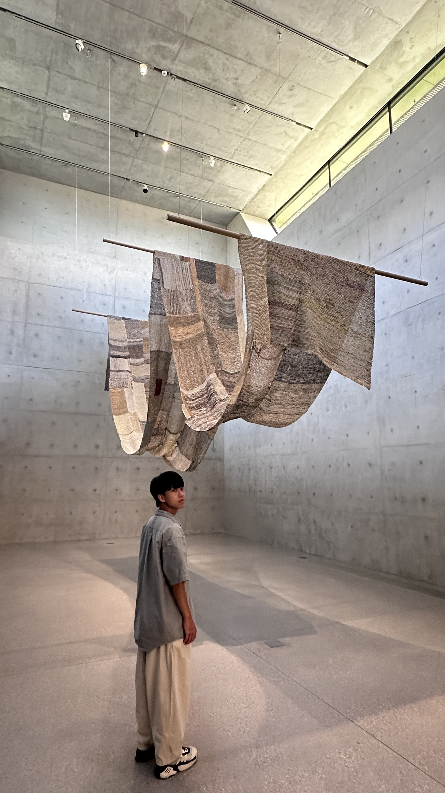

基本資料
學歷：
社口國民小學藝術才能班
豐原國民中學藝術才能班
豐原高中普通班
語言能力：中文、英文
中原大學資管系
每天都要睡飽飽
我是一位就讀中原大學資管系的學生，對於資訊科技充滿熱情，喜歡探索新技術並應用於實際專案中。我平時的興趣是打電動，其中更以單人遊戲為主，喜歡沉浸在故事情節和角色扮演中。 平時也喜歡嘗試各種事物，從烹飪到戶外活動都樂於參與，這讓我在學習和生活中保持開放的心態，願意接受挑戰並不斷成長。

學歷：
社口國民小學藝術才能班
豐原國民中學藝術才能班
豐原高中普通班
語言能力：中文、英文
定食八工讀（2023.03-2023.08）
家樂福收銀員（2024.12-2025.06）
遊戲愛樂園（2024.06-2025.04）
托嬰照護員（2025.07-now）
在這項專案中，我負責進行產品商業分析，主要任務包括市場調查、競爭對手分析以及商業模式設計。 我與團隊合作，收集並分析了大量的市場數據，識別了目標客戶群和潛在的市場機會，也評估了競爭對手的優勢和劣勢，並提出了差異化的產品定位策略。 透過 SWOT 分析，我們評估了產品的優勢、劣勢、機會和威脅，並根據分析結果提出了具體的商業策略建議。 這段經歷讓我深入了解了商業分析的流程和方法，也提升了我的數據分析能力和團隊協作能力。
在 AI Interview 專案中，我主要負責系統實作，依據需求書將功能逐步實現， 同時協助團隊進行工作分配與進度協調。在這段過程中，我不僅培養了跨組溝通與問題解決的能力， 也在前後端開發技術上獲得了實質的成長與突破。
在這個專案中，我負責系統開發與實作，根據需求書逐步完成各項功能的實現。 在此過程中，我積極協助團隊進行工作分配與進度協調，確保專案按時完成。 這段經歷不僅提升了我的前後端開發技能，也增強了我的跨組溝通與問題解決能力，讓我在專業領域有了更深的成長。